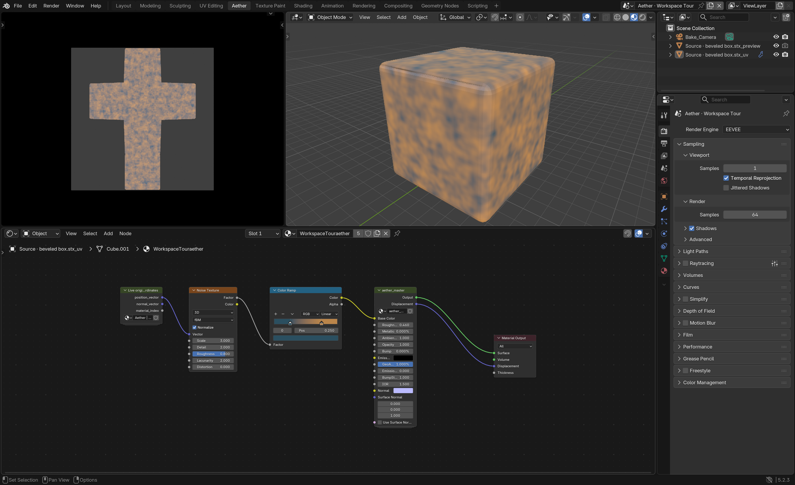
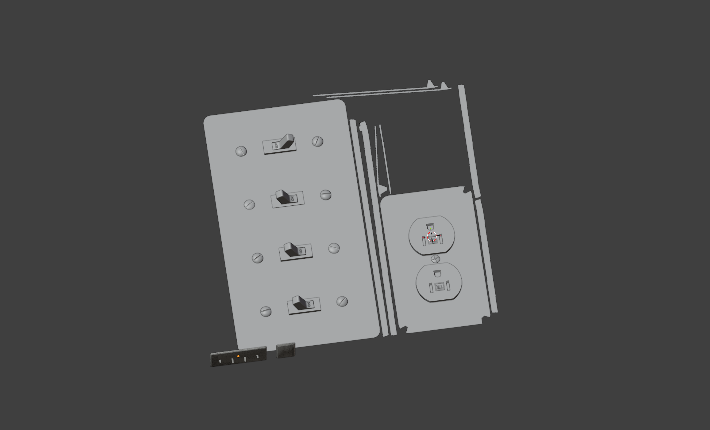
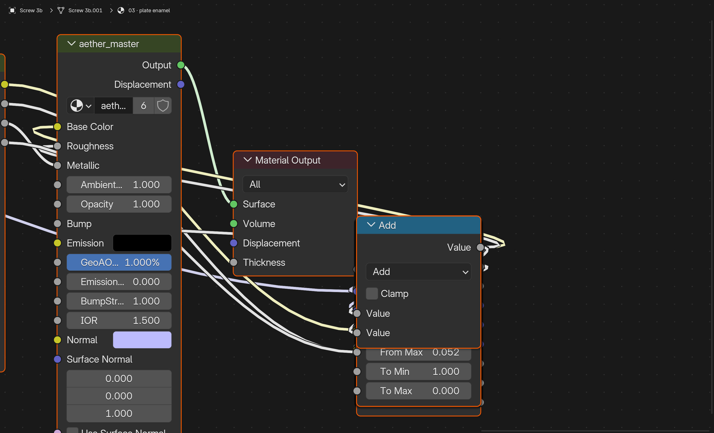
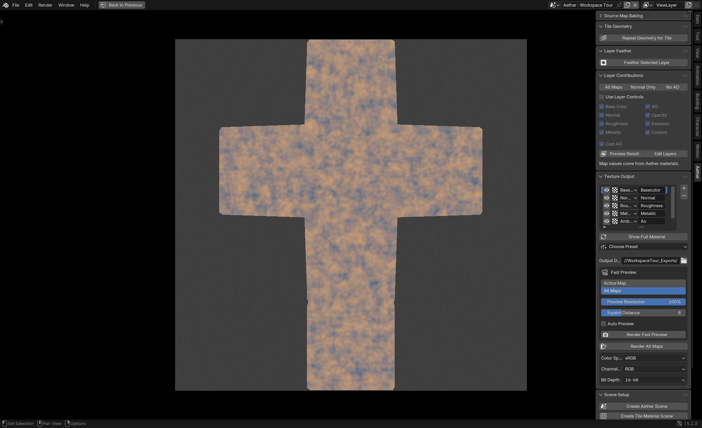

Blender material authoring · In development
Aether
Object texturing and seamless materials, built in Blender.
I started Aether in 2025, bringing my xBake and TextureLab workflows together. I use it to build surface detail with geometry, Geometry Nodes and shaders, then capture the result as texture maps.
The current Aether is unreleased. The GitHub repository contains an older preview.


Object texturing
Surface Detail from Geometry
Aether uses Geometry Nodes to bring the evaluated object into texture space using its UVs, while keeping the source position, normal and material index available to drive detail.
For these wall plates, switches, screws and outlet details are real geometry in the authoring scene. Aether captures that construction and its materials into maps I can review on the object.
I’ve also tested the height map with parallax occlusion mapping in Plush. POM shifts texture coordinates with the viewing angle to suggest depth on a flat surface.
See the wall plates in the gallery →




Seamless materials
Building a tile
For a repeating material, the canvas is a tile. I can model boards or bricks, scatter grass with Geometry Nodes, and use procedural shaders for finer surface detail.
Aether repeats the evaluated geometry across tile edges, so the same seeded shapes continue onto the next tile. I can change the construction and capture a new set of maps.
Geometry repeat →
Capture and preview
From the scene to maps
An orthographic camera captures the texture-space scene into base color, normal, roughness, AO, height and other outputs. Layers can contribute to individual maps and cast AO independently.
I check a fast preview on the receiver, then export separate or packed maps. The sidebar keeps the layer, preview and output controls together.
Map export →

Development workflow
Working through MCP
I’m using MCP as a common way to work across my tools. A small set of reusable operations lets an assistant inspect a project, find an extension’s API and the working standards I’ve built up over years, run Blender Python, call operators and reload code. The extensions remain independent, and the work happens in the actual Blender session.
That gives compatible clients a path to the same tools whether the model runs locally or in the cloud. I can give a smaller model the specific API, project context and standards it needs, rather than the entire codebase. Focused context can reduce token use and helps different models follow the same established workflows, though the results still depend on the model and task.
Aether’s API is generated from operator docstrings and Blender property declarations, like Plush’s source-derived reference. The assistant can query the current source; this website shows a generated snapshot.
Browse the API →Recent work
Materials and props in Plush
The gallery collects recent renders and map sets, including material variations and wall plates. It also compares flat PBR, parallax occlusion and experimental near-field surfels on the same grass surface.
Explore the gallery →